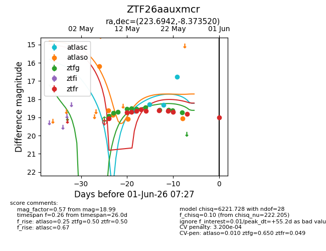
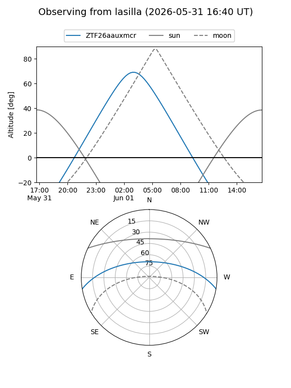
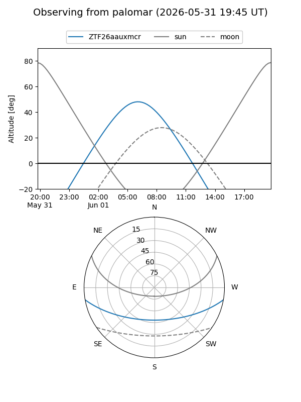
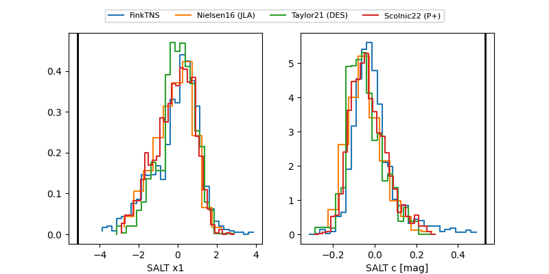

ZTF26aauxmcr
Target ZTF26aauxmcr at 2026-06-01 07:28
Aliases and brokers:
lsst-FINK: link
lsst-Lasair: link
lsst-ALeRCE: link
ztf-FINK: link
ztf-Lasair: link
ztf-ALeRCE: link
alt names
ZTF26aauxmcr (ztf,fink_ztf)
Coordinates:
equatorial (ra, dec) = 223.6942,-8.37352
equatorial (HMS+DMS) = 14:54:46.62,-08:22:24.67
galactic (l, b) = (347.3802,+43.60146)
Flags:
likely cv: !
Photometry:
last atlasc=16.77, atlaso=19.05, ztfg=18.72, ztfr=18.99
4 atlasc, 5 atlaso, 11 ztfg, 11 ztfr detections
Lightcurve

Visibility


Additional plots
